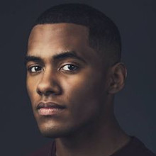

Chloe (Owner)
I chose the beauty industry because who doesn’t want to help others feel and look beautiful?! I love creating a different look for each guest and making them feel unique. I enjoy doing all types of cuts and colour!
Click here to see Chloe's gallery
Sammy
I have been in the industry since 2014. I specialize in colour transformations and custom hair cuts. This ever changing career has allowed me to offer something new and exciting to my beautiful guest. The continuing education is the fuel to my passion. Seeing my clients smile is truly priceless!
Click here to see Sammy's gallery
Jadon

I love that within the beauty industry, it is creativity and building relationships, all in one. I’ve always had an appreciation towards art and I truly believe what I get to do is 100% art. It is important to continue to grow and be better and with this being year one for me, I have so much to look ahead to!
Click here to see Jadon's gallery
Nicki
What I am passionate about in the hair industry is the ongoing education, staying on top with new trends and always new training techniques.Running day to day operations for Star Stylists and being the forefront has allowed me to establish great customer relations and ensure 100% customer satisfaction.
Click here to see Nicki's gallery
Caleb
I love the industry I am in because it allows me to help people with their confidence! This industry is about being creative whether it is a colour and haircut service. My specialties are men's hair, balayage and fantasy colour techniques.
Click here to see Caleb's gallery